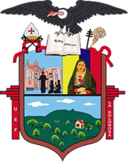
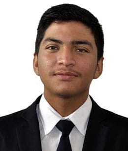
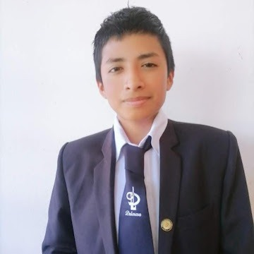

Admisiones y Requisitos
Conoce requisitos, documentos y pasos para el proceso de admisión.

Bienvenido al Chatbot de la Unidad Educativa Fiscomisional La Dolorosa. Estoy aquí para ayudarte con tus consultas académicas e institucionales.
Conoce requisitos, documentos y pasos para el proceso de admisión.
Conoce sobre la oferta educativa, autoridades, jornadas y servicios que ofrece la institución.
Accede a documentos institucionales, lista de útiles, uniformes e informativos oficiales.
La Unidad Educativa Fiscomisional La Dolorosa es una institución católica dedicada a brindar educación de calidad con valores cristianos. Su objetivo es formar estudiantes integrales, responsables y comprometidos con su comunidad.
Puedes escribir preguntas como: “requisitos de inscripción”, “matrículas”, “horario DECE”, “promotores del proyecto”, “contacto del proyecto”, “teléfono”, “ubicación”, “autoridades”, “valores”, “documentos institucionales” o “lista de útiles”.

Encargado del desarrollo frontend y la integración de componentes visuales del chatbot.

Líder del proyecto, responsable de la arquitectura del sistema, backend del chatbot y coordinación del equipo.
Encargado del desarrollo backend, la base de conocimiento del chatbot y la documentación del proyecto.
Correo: yungajuan799@gmail.com
Teléfono: 0981600692
Loja, Ecuador